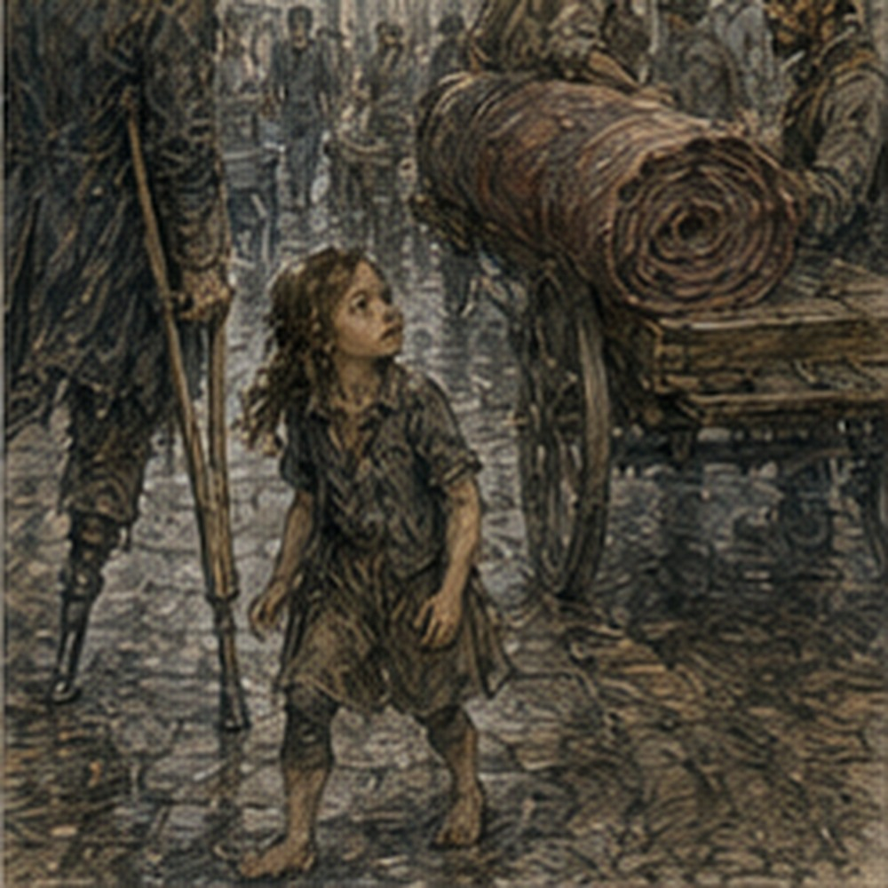

The problem with having nowhere to be was that I wanted to go somewhere. This was inconvenient. The Guild had sent nothing. Edrin had sent nothing. Holl had sent nothing. Pell and Vessa had very successfully sent nothing. Alden's padded knife sat beside my notebook. I picked it up. Put it down. Picked it up.
“Either steal it or don't,” the keeper said.
“It's mine temporarily.”
“That sounds like stealing with grammar.”
I put it down again. Breakfast was fried eggs, bread, and something pretending to be sausage. I ate all of it. Nineteen. Reliable. My residual limb looked boring. This was good. Dry dressing. No new drainage. No heat I could detect.
Swelling down from the training yard. Phantom foot felt as if it had slept crooked. Ankle stiff. Toes cramped. None existed. Excellent. I flexed my knee. Waited. The false ankle remained offended.
“Doing anything?” keeper asked.
“No.”
“You're staring at wall.”
“That's something.”
“Paying work?”
“No.”
“Then less something.”
Rude. I looked at my shirt. Same brown shirt. Clean enough. Not good. My coat hung on peg. Boot. One boot. Crutches. Hair probably terrible. I had not seen upstairs mirror since yesterday because I had slept downstairs after Nerin's no-stairs instruction. There was a small polished pan in kitchen. I looked. Distorted face. Messy dark hair. Young beard. One cheek stretched by pan curve.
I looked like an idiot. Useful.
“I need clothes.”
Keeper glanced.
“You have clothes.”
“I need better clothes.”
“For what?”
I did not know. That improved the idea.
“For being nineteen.”
She stared.
“Finally.”
Fuck her.
*
Tam's shop had one step. I knew. Cart. I could go. Ground-floor activity was fine if I kept it reasonable. No wound check until afternoon. I did not need a medical consultation to buy a shirt. Probably. I considered walking partway. No. That thought lasted less than a second. Good. Transport was not surrender. It was transport. Also my shoulders had opinions now, and they were expensive.
I hired the cart. The driver from yesterday was not available. Good. This one was a woman with a scar through one eyebrow and no interest in conversation. Better.
“Tam's.”
She nodded. We went. Carrow morning. Fish carts. Bread. Wet stone from last night's rain. A wagon full of bundled reeds. Two Guild couriers arguing at intersection. Not Sevren. A woman carrying three chickens upside down. One chicken looked at me. I looked back. Neither helped. Good city.
*
Tam was stitching a boot. Two boots. Pair. Normal. He looked up.
“Greg.”
“Tam.”
“Need glove?”
“No.”
“Boot?”
“No.”
There. Tiny pause. Good.
“Shirt.”
He stared.
“You know I'm a shoemaker.”
“Yes.”
“Then why?”
“You know people.”
“I regret this already.”
“I need clothes.”
“You have clothes.”
“Everyone says that.”
Tam looked at my shirt. Then coat. Then hair.
“Actually.”
“Fuck you.”
He laughed.
“What kind?”
“Better.”
“Useful.”
“Not Guild.”
“Fancy?”
“No.”
“Date?”
I stopped.
“No.”
Tam smiled.
“Ah.”
“No.”
“You paused.”
“Because question was stupid.”
“Sure.”
“I want a shirt.”
“Color?”
Not brown. Why? Because I owned brown.
“Blue?”
Tam nodded.
“Dangerous.”
“What?”
“Nothing.”
He wiped hands.
“Octavia knows cloth better.”
“She's working.”
“Nessa?”
“Food.”
“Lyssa.”
I knew Lyssa from green door.
“Does she sell clothes?”
“Her aunt does alterations. Lyssa helps sometimes.”
“Where?”
“Dryer's Lane.”
Capital S? No. Street.
“Near?”
“Three blocks.”
Three blocks. Crutches. No. Cart.
“Name?”
“Rima Seln. Narrow shop, yellow shutters.”
“Expensive?”
“Depends whether you buy new.”
“Used?”
“Some.”
Good. I looked at Tam's bench. A strip of dark leather. Could be boot. Could be anything. I did not ask. Excellent.
“Also,” Tam said, “your old boot leather is mostly patch pieces.”
“Good.”
“One decent strap.”
“Good.”
“That's all.”
“Good.”
He narrowed eyes.
“What?”
“Nothing.”
Good.
*
The lane itself was busy enough that getting from cart to shop took longer than expected. Not distance. People. A delivery boy left a crate in exactly the wrong place. A woman stopped to argue over ribbon.
Two men carried a rolled carpet sideways and briefly converted the lane into a wall. I waited. This was new. Old walking Greg would have threaded through. Young walking Greg probably would have tried to beat carpet.
Current Greg stood beside cart with crutches and let traffic solve itself. The carpet passed. No lesson. Just slower. A little girl stared at my missing lower leg. Her mother noticed and pulled her attention away. I almost said it was fine. Didn't.
Not my job to manage staring. The girl looked again anyway. I winked. She hid behind mother's skirt. Fine. Rima Seln's shop had yellow shutters. One step. Of course. Carrow was built entirely from one-step buildings and fourteen-step lodgings. I managed. Inside smelled like wool, starch, cedar. Clothes hanging from pegs. Folded shirts. Trousers. Coats. Used rack. New rack. A mirror. Actual mirror.
Danger. Lyssa stood on stool pinning a sleeve on an older man's coat. She saw me in mirror.
“Greg?”
“Unfortunately.”
The older man looked. I ignored. Lyssa smiled.
“What are you doing here?”
“Apparently buying clothes.”
“Why apparently?”
“I haven't succeeded.”
“Rima!”
A woman behind curtain answered, “What?”
“Customer.”
There. Customer. Good. Rima emerged. Late forties maybe. Gray streak at temple. Pins between lips. She removed them.
“Need?”
“Shirt.”
“Size?”
I looked down.
“Mine.”
She stared. Lyssa laughed.
“Stand?”
Rima asked.
“I can.”
“Need measure.”
Ah. Standing. Fine. I set crutches. Right foot. Up. One hand on counter. Stable. Rima measured shoulders. Chest. Arm. Waist. Fast. No commentary about missing leg. Trousers? No. Shirt. Good.
“Young,” she said.
“What?”
“Cut.”
“What about it?”
“You dress old.”
Lyssa made a noise. I looked at her. She was suddenly fascinated by coat sleeve. Traitor.
“I am old.”
Rima looked at face.
“No.”
Complicated.
“What do nineteen-year-olds wear?”
“Bad decisions.”
Lyssa laughed again. Good.
“Show me.”
Rima pulled three shirts. Blue. Green. Cream. Blue had narrow collar and darker stitching. Green looked like forest had lost argument. Cream would stain immediately.
“Blue.”
“Try.”
Changing. Right. I looked around. Curtain. Chair inside. Good. Crutches. Shirt off seated. New shirt on. Young body. Lean. Still underfed-looking, though less than before. Bandage under trouser leg, not visible much. Scars? Old minor. I caught mirror. Shoulders. Chest. Face. Nineteen. Actually nineteen. The blue made that worse. Or better. I did not know. I buttoned. One button wrong. Fixed. Came out.
Lyssa looked. Then looked again. Tiny. There. Oh. I noticed. Physical nineteen. Hello. Rima said, “Better.” I looked in mirror. Blue. Dark hair. Uneven beard. Crutches. One trouser leg pinned/folded? Current clothing around residual limb adapted enough for dressing, likely loose trousers. The missing lower leg was obvious from stance and crutches. Still me. Different. No. Not sentence.
“Price?”
“Used. Four copper.”
“Three.”
“Four.”
“Stitching loose.”
She looked.
“Where?”
I pointed at cuff. It was not loose. Rima stared.
“Four.”
“Three and you keep brown shirt.”
“No.”
Lyssa laughed.
“Why would she want your shirt?”
“Material.”
“Bad material,” Rima said.
Rude.
“Four.”
Four copper was enough that I noticed. Not enough that I regretted it. Different. I had paid more for tools. Less for meals. Money for a shirt that did not improve work, safety, debt, magic, or healing. Completely inefficient. Excellent. I paid four. Not poverty. Choice.
“Wear it?”
“Yes.”
Rima folded brown shirt.
“Bag?”
I looked at crutches. Right. Lyssa tied folded shirt in cloth and looped it over my shoulder.
“There.”
“Everyone solves carrying before me.”
“Most people have arms.”
“I have arms.”
“Occupied arms.”
“Technical.”
She smiled. Attraction. Maybe. Do not optimize.
“What are you doing later?” she asked.
There. Oh.
“Nothing.”
Good answer.
“Green door after supper?”
“Maybe.”
She groaned. Everyone. I laughed.
“I mean actually maybe. Stairs. Wound. Transport.”
Her face shifted. Not pity. Calculation.
“Fine. If you're there, you're there.”
Excellent. No recovery committee.
“Are you?”
“Yes.”
“Then maybe.”
She pointed at me. I left before this became scheduling.
*
Outside, I felt stupidly good. Blue shirt. Four copper. No purpose. Excellent. I sat in cart. Driver looked once.
“New?”
“Yes.”
“Blue.”
Correct. We went. I considered asking to stop at barber. No. Hair fine. Beard? Uneven. Nineteen. Could trim. Later. Too much improvement becomes project. No.
*
At lodging, keeper looked up.
“Oh.”
“What?”
“Nothing.”
“Everyone.”
She smiled.
“Pretty.”
I stared. She returned to peeling carrots. Fuck. I went to storage room. Mirror absent. Good. I did not need another look. I looked in polished pan anyway. Still distorted. Still blue. Good.
*
A Guild runner came before lunch. Of course.
“Gregory?”
“Yes.”
“Clerk asks if you want a half-hour equipment receipt check this afternoon. Seated. Front hall.”
I thought. Could. Pay?
“One copper.”
Transport would cost more if separate. I was already home. No.
“Decline.”
Runner nodded. No concern.
“Reason?”
“Don't need one.”
He blinked. Then smiled.
“Right.”
Good. He left. I felt nothing profound. One copper job. Didn't want it. Fine.
*
Lunch. Bread. Cheese. Apple. I ate at kitchen table. Alden's knife still there. Keeper had moved it beside salt. Dangerous table. I picked it up. One slow turn. Lyssa had looked twice. My brain replayed that instead of knife. Excellent. Young Greg winning. Old Greg annoyed. Present Greg interested. Could go green door. Medical check afternoon. If wound good. Stairs? I was downstairs.
If I went green door, return downstairs. Sleep storage. Fine. No need upstairs tonight. There. Possible. I smiled.
“Why?” keeper asked.
“Nothing.”
“Girl?”
I choked on bread. She laughed.

Terrible woman.
*
Nerin arrived mid-afternoon. Not Sera. Again. Fine. He saw shirt.
“Oh.”
I pointed. He laughed.
“Leg.”
“Romance dead.”
“What?”
“Nothing.”
Unwrap. Dry. No heat. No redness. Swelling modest. Training-yard accidental stand had not produced delayed wound issue. Good.
“Revision?”
“No new reason.”
“Stairs?”
“You're downstairs.”
“Tonight.”
“Need to go up?”
“No.”
“Then don't.”
Excellent.
“Green door?”
He looked at me.
“Medical question?”
“Yes.”
“How long?”
“Maybe two hours.”
“Beer?”
“One.”
“Transport?”
“Yes.”
“Sit?”
“Yes.”
“Someone bump you?”
“Probably.”
He stared.
“Try not.”
“Useful.”
“Go if you want. Leave if pain or swelling increases significantly. Don't turn it into endurance test.”
“I never.”
He stared harder.
“Recently.”
“Medium.”
Good. No permission needed socially. Medical conditions. Fine.
*
I had hours before supper. Bored. Could visit Holl. No. Data. Could Guild. Declined. Could find Alden. No. Could nap. I tried. Blue shirt wrinkling. No. I changed back into brown shirt to nap. Then realized I had bought shirt and immediately protected it from sleeping. Correct. I hung blue shirt on peg. Looked at it. Stupid. Good. I slept twenty minutes.
Woke hungry. Again.
*
Jorren came through front door around fifth bell. He saw blue shirt on peg.
“Whose?”
“Mine.”
He looked at me. Then shirt.
“Why aren't you wearing it?”
“Resting.”
“The shirt?”
“Yes.”
He laughed.
“Green door?”
“Yes.”
No maybe. He stopped.
“Who are you?”
“Fuck you.”
“Good.”
He sat.
“Cart?”
“Yes.”
“I can walk.”
“Congratulations.”
“I mean I'll meet you.”
“Good.”
He had his own errands first. Perfect.
“Lyssa there?”
I asked too casually. Jorren's face became unbearable.
“No idea.”
“Good.”
“Ah.”
“No.”
“Ah.”
“Leave.”
He left laughing. I hated everyone.
*
I changed into blue shirt before supper. Buttoned correctly first try. Hair with water. Beard. Could trim. No. I looked nineteen. Fine. I looked like a nineteen-year-old with crutches and one lower leg missing. Also fine? No. Not fine. True. I stood with counter support and looked at polished pan. Distorted. Better. Actual mirror upstairs would be crueler. No need. Keeper came in.
“Turn.”
“No.”
“Turn.”
“Why?”
“Shirt.”
I turned.
“Fits.”
“Thank you.”
“Girl will like.”
“Fuck.”
She laughed.
*
Green door was busier than last time. Not packed. Enough. Cart dropped me close. Jorren was already there. Nessa behind counter. Octavia at table with two people I knew by face, not name. Lyssa was there. Blue dress. Of course. I noticed immediately. She noticed shirt. Immediately. Good.
“Blue,” she said.
“Apparently.”
“Better.”
“Everyone.”
She laughed. I sat. Chair with wall behind. Crutches tucked where no one tripped. Learned. Nessa put fried potatoes down.
“I didn't order.”
“Lyssa did.”
I looked. Lyssa shrugged.
“Customer reward.”
“For shirt?”
“For surviving Rima.”
Fair. I ate.
*

Before conversation became useless, it briefly became about money. Octavia had apparently paid too much for onions. Nessa said no. Octavia said absolutely.
“Three copper for that basket.”
“Late rain,” Nessa said.
“Rain does not make onions noble.”
“Road does.”
Jorren said, “Everything costs more when somebody has to move it.” I pointed at him.
“Correct.”
“Don't encourage him,” Octavia said.
Lyssa asked what my shirt cost.
“Four.”
Octavia looked at it.
“Used?”
“Yes.”
“Three.”
“Rima said four.”
“Rima saw you coming.”
“She literally did.”
Lyssa laughed.
“She charged fair.”
“How know?”
“I helped sort that rack.”
There.
“Then you knew price before I bought.”
“Yes.”
“Conflict.”
“Not my shop.”
“Information asymmetry.”
“Your cuff wasn't loose either.”
Fuck. She had heard. I stared. Tam. No. She had been there. Right.
“You tried to invent defect.”
“Negotiation.”
“Lying.”
“Commercial language.”
Nessa put potatoes down.
“You're all banned from discussing commerce.”
Good. Conversation was useless. Excellent. Someone had seen a dog steal an entire smoked fish. Octavia argued dog had earned it. Jorren said theft. Nessa said fish seller should have guarded inventory. I said risk allocation depended on whether dog was foreseeable. Everyone told me to shut up. Good. Lyssa asked about training yard.
“Alden told everyone?”
“Jorren.”
Traitor.
“I watched.”
“You fought?”
“No.”
“Held knife?”
“Twice.”
“That sounds like fought.”
“Everyone.”
“Did you win?”
“No.”
“Good.”
“Why?”
“You'd be unbearable.”
Correct. She drank cider. I had one small beer. Slow. Body warm. Young. Good. A man near the hearth played a three-stringed instrument badly. Background. People talked over him. Good. Lyssa leaned closer because room loud. I noticed neck. Hair. Smell like soap and wool. Physical nineteen. Very awake. She said something. I missed.
“What?”
“I said you look less dead.”
“That is medically accurate.”
She rolled eyes.
“No. You looked like you were waiting for someone to tell you where to sit last time.”
I looked at chair.
“I still asked about chair.”
“Not what I meant.”
Danger. Do not therapist.
“Then what?”
“You came in dressed for being here.”
Oh. Shirt. Simple. Good.
“I bought shirt.”
“I know.”
“You were there.”
“Yes.”
We both laughed. No lesson.
*
A man bumped my crutch. Again. Different man. Crutch shifted. My stomach dropped. Hand caught. No fall. He apologized immediately.
“Sorry.”
“Fine.”
He moved. My heart ran. Lyssa saw. Did not ask. Good. I repositioned crutch farther under table. Local fix. Then returned to argument about dog. This time I voted dog innocent. Jorren accused inconsistency.
“New evidence.”
“What evidence?”
“Dog wanted fish.”
“That's not evidence.”
“Strong motive.”
“That's evidence against.”
Fuck.
*
Someone at the next table started a dice game. Jorren joined immediately. Octavia refused because she claimed Jorren cheated.
“He doesn't,” I said.
Jorren looked offended.
“Thank you.”
“He's just bad at losing.”
“Fuck you.”
Nessa handed me dice.
“No.”
“Why?”
“I don't know game.”
“Better.”
I played. Lost two copper in six minutes. Excellent. No optimization. Actually, some. I learned rules after first round. Odds not hard. People were. Jorren bluffed badly. Octavia joined after all and bluffed well. Lyssa did not bluff. She simply smiled whether hand was good or bad. Annoying. I won one copper back. Net loss one. Fine.
I could afford one copper for being nineteen badly. At some point I caught myself calculating expected value from visible betting habits. Stopped. Rolled. Lost. Better. After maybe an hour, Lyssa asked, “Walk outside?” I looked at crutches. She winced.
“Sorry. I mean come outside.”
“Words.”
“Yes.”
Could. Front threshold. Flat lane. Short.
“Okay.”
We went. Not far. Ten yards. Maybe fifteen. Wall. Night air. Carrow lamps. River smell faint. My shoulders already slightly tired. We stopped. Lyssa leaned against wall. I stood on crutches. This was not ideal flirting geometry. Fine.
“You actually wanted clothes?” she asked.
“Yes.”
“Why?”
“I was tired of brown.”
“That's it?”
“Yes.”
Maybe. She smiled.
“Good.”
“Why good?”
“Because sometimes people buy clothes because someone told them they should.”
“Tam told me where.”
“Not same.”
Fair. She looked at me. I looked back. There. Could kiss. Maybe. Did I want? Yes. Did she? Maybe. People-reading. Dangerous leap. Ask? Old Greg had opinions. Young Greg had heat.
Present Greg said:
“Can I kiss you?”
There. Simple. Lyssa smiled.
“Yes.”
Good. I leaned. Crutches. Fuck. Geometry. She stepped closer instead. One hand lightly on my shoulder. Not balance support exactly. Maybe both. I kissed her. Brief. Warm. Very normal. Then my phantom left foot tried to step closer. Of course. My hip moved. Crutch caught. I broke kiss with a laugh.
“Problem?”
she asked.
“Ghost foot.”
She blinked. Then laughed too. Not cruel. Good.
“Again?”
I asked.
“Yes.”
Second kiss better because I did not attempt nonexistent step. Excellent. No grand romance. No destiny. Just kissing. Nineteen. Fuck yes.
*
We went back inside. Jorren looked at my face. I pointed before he spoke. He shut mouth. Then grinned. Terrible. Nessa gave me another potato. Maybe reward. Maybe food. I ate.
*
I left before pain made decision for me. This mattered only practically. Residual limb throbbing. Shoulders tired. One beer. Good evening. Done. Lyssa stayed. She did not escort me home. Good. She had friends. I had cart. At door she said, “Next time?” There.
“Ask.”
She groaned. I laughed.
Then:
“Yes.”
Her face changed slightly. Good.
“Goodnight, Greg.”
“Goodnight.”
Cart. Home.
*
Keeper was awake. Of course. She looked at blue shirt. Then face.
“No.”
“What?”
“I said nothing.”
“You're about to.”
“No.”
“Good.”
She smiled. Getting from cart into lodging after a good evening was less romantic than leaving it. Front step. Crutches. Door. Shoulder tired. Right leg stiff. Keeper had left a chair near entrance. I used it. No argument. Sat two minutes. Maybe three.
The phantom foot still felt as though it were outside with Lyssa. Ridiculous. Body-map apparently had social preferences. No. Do not theory. The beer made that thought funnier than it was. I drank water. Keeper slid cup without comment.
“Thank you.”
“Mm.”
“You're being normal.”
“I'm tired.”
“Good.”
There. I pointed. She ignored. I went storage room. No stairs. Correct. Blue shirt smelled like smoke and outside. I took it off carefully. Hung it. Residual limb swollen modestly. No wetness. Good. Phantom foot tingled. Also good? No. Normal. Maybe. I lay down.
*
Morning. No catastrophe. Excellent. Blue shirt on peg. Padded knife on table. Two unrelated things. Good. I ate breakfast in brown shirt. Keeper said nothing for almost three minutes.
Then:
“Blue tonight?”
“Fuck you.”
She laughed. I had planned absolutely nothing for the morning. This felt luxurious for approximately seven minutes. Then I started listing possibilities. Bath. Still complicated. Hair. Could trim. Green door later. Maybe. Training yard. Not today unless Pessa available and body okay. Guild. No. Holl. No. Edrin. Absolutely no. Antonius. No scheduled payment. Room upstairs.
Could make controlled ascent later if spotter and wound stayed quiet. Blue shirt. Could buy another eventually. Why? Because one shirt did not constitute personality. Stop. I crossed entire mental list out. No notebook required. A Guild runner came. Of course. Folded note. Not job. Antonius. There. I opened. Gregory,
Your deferred payment period remains in effect through the agreed injury interval. No payment is presently due. When you are able, I would like an updated account of what kinds of work you can and cannot reasonably perform before we discuss any future labor credit. No urgency. A. Vale I read twice. Debt. Still there. Deferred. Not forgiven. Future work uncertain. No urgency.
Good. I folded. Keeper asked, “Bad?”
“No.”
“Good?”
“No.”
“Then?”
“Antonius.”
She nodded as if that explained category. It did. I put note in notebook. Not today. Could answer later. No urgency meant no urgency. I believed him enough to use the words. Maybe.
*
Alden arrived ten minutes later. Saw blue shirt on peg. Looked at me.
“No.”
He grinned.
“Lyssa?”
“How does everyone know?”
“Carrow.”
Fuck city. He reached for bread. I slapped hand. He feinted. I caught second hand this time. There. He looked impressed.
“Training.”
“Bread.”
“Same.”
“No.”
He left padded knife. Still.
“Pessa tomorrow maybe,” he said.
“Ask tomorrow.”
He groaned. I smiled.
*
The day had a shirt. A kiss. A debt note. A knife. A wound that still needed watching. A staircase I still could not use whenever I pleased. No work. No mystery. No revelation. Good. I looked at blue shirt. Four copper. Worth it. Probably. No. Definitely.
I ate the last piece of bread before Alden could come back.